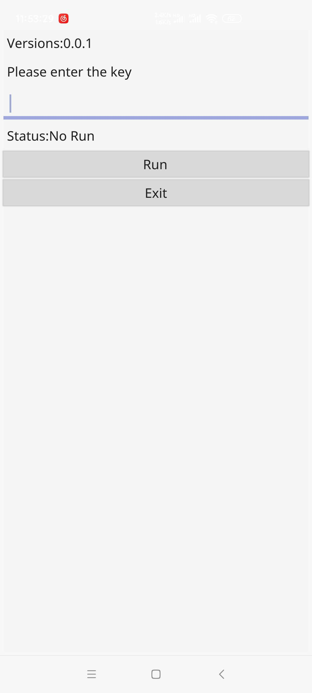
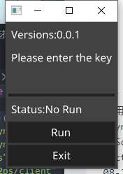

使用fyne将go程序运行在安卓上
- 作者:
- 淡白
- 创建时间：
- 2020-08-23 19:39:08
- fyne
摘要：这篇文章介绍了如何将u2ps客户端运行在安卓上。作者采用了fyne跨平台界面库来进行开发，并提供了环境搭建和代码编写的步骤。最后，作者展示了运行的结果，包括生成的apk和exe文件的截图。
如何让u2ps客户端运行在安卓上.
在网上找到了几种方法,可以把go打包成aar安卓调用. 为了快速开发,我采用fyne跨平台界面库开发.
需要环境:
GO、安卓sdk、ndk
首先 go get fyne.io/fyne安装fyne
编写app.go
package main
import (
"fyne.io/fyne/app"
"fyne.io/fyne/widget"
"os"
"u2ps/client"
"u2ps/common"
)
type enterEntry struct {
widget.Entry
}
func newEnterEntry() *enterEntry {
entry := &enterEntry{}
entry.ExtendBaseWidget(entry)
return entry
}
func main() {
//converts a string from UTF-8 to gbk encoding.
a := app.New()
w := a.NewWindow("U2PS")
entry := newEnterEntry()
state := widget.NewLabel("Status:No Run")
bt := widget.NewButton("Run", func() {
if len(entry.Text)>=1{
state.SetText("Status:Run")
entry.Hidden = true
common.Key = entry.Text
entry.Text=""
common.HostInfo = "server.u2ps.com:2251"
common.MaxRi = 10
go client.Conn()
}
})
w.SetContent(widget.NewVBox(
widget.NewLabel("Versions:"+common.Versions),
widget.NewLabel("Please enter the key"),
entry,
state,
bt,
widget.NewButton("Exit", func() {
os.Exit(1)
})))
w.ShowAndRun()
}
使用命令行命令编译成apk也可以是exe等其他平台执行文件:
fyne package -os android -appID com.example.myapp
运行展示
apk:  exe: 